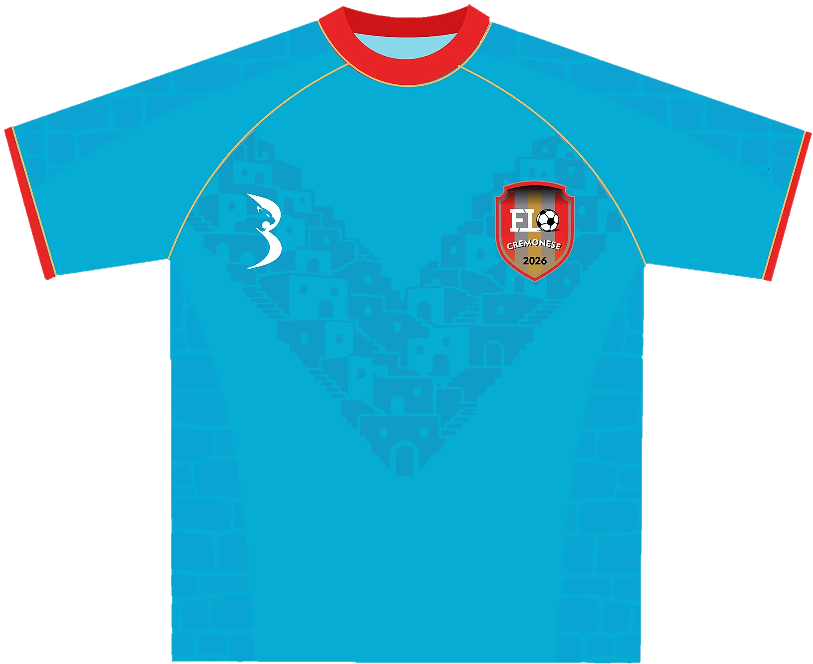

We don't create just kits. We create identity.
A football club
is more than
11 players.
It is
belonging.
It is
identity.
It is
culture.
That is
Ballanqué.
Testo di salaQuesto museo raccoglie identità. Ogni maglia esposta nasce da un club, da un territorio e da una comunità. Il percorso parte dal tessuto e arriva al campo.

The shirt is the canvas01 / 07
- IL'opera interaAzzurro, rosso e un filo d'oro. Prima si guarda da lontano.
- IIIl patternCase a gradoni, una sopra l'altra, disegnano una V sul petto. Il paese diventa trama.
- IIILo stemmaSul cuore, lo stemma del club: le righe dei colori sociali, il pallone, l'anno 2026.
- IVIl marchioDall'altra parte del petto, il giaguaro Ballanqué. La firma del curatore.
- VIl collettoGirocollo rosso, interno azzurro chiaro, profilo d'oro.
- VILa cucituraIl taglio raglan è segnato da un filo d'oro che scende dal colletto fino al sottomanica.
- VIIIl polsinoIl bordo rosso chiude la manica, con lo stesso profilo d'oro del colletto.
Scorrete lentamente: la lente segue il vostro passo. Ogni dettaglio racconta una parte della storia del club.
The CollectionA collection of identities.
Il prodotto è la maglia. Il vero prodotto è
From idea
to identity.
Fase 01Listen
Conosciamo il club. Presidenti, capitani, magazzinieri, tifosi. Prima di disegnare, ascoltiamo.
Il primo incontro dura sempre più del previsto. È lì che nasce la maglia.
Fase 02Discover
Studiamo storia e territorio: archivi, fotografie, architetture, le strade intorno al campo.
Fase 03Design
Trasformiamo la storia in linguaggio visivo: colori, pattern, simboli, tipografia dei numeri.
Fase 04Build
Creiamo la divisa: tessuti, stampa, ricami, prove. Ogni dettaglio viene verificato sul corpo.
Fase 05Belong
La maglia entra in campo e diventa identità. Da quel momento appartiene al club.
Football
culture.
Ogni riquadro apre la sala o la mostra che ne racconta una parte. L'archivio cresce a ogni nuovo progetto.
Football is
made of people.
Le fotografie di questa sala vengono dai campi dei club, senza pose da catalogo e senza stock. Cliccate una stampa per entrare nella mostra della maglia.
Football Club Identity & Culture
Non creiamo solo maglie. Lavoriamo con i club per costruire quello che viene prima e dopo la maglia: un'identità.
Ballanqué è un atelier di identità calcistica. Partiamo dalla storia di un club, dai suoi colori, dal suo territorio e dalle persone che lo tengono in vita, e li traduciamo in un linguaggio visivo che si può indossare.
Il giaguaro del nostro simbolo guarda la palla: attenzione, istinto, appartenenza. Lo stesso sguardo che portiamo su ogni progetto.
Build your
identity.
La prossima storia è quella del tuo club.
Raccontaci da dove venite, cosa rappresentate e cosa vorreste portare in campo. Partiamo dalla vostra storia per costruire un'identità.
collab@ballanque.comPer iniziare, indicaci il nome del club e il tipo di progetto che hai in mente. Il link email apre il tuo programma di posta.
Worn on
the pitch.
Le maglie Ballanqué fuori dallo studio: in campo, per strada, addosso alle squadre che le hanno scelte. Toccate una foto per aprire la mostra della maglia.